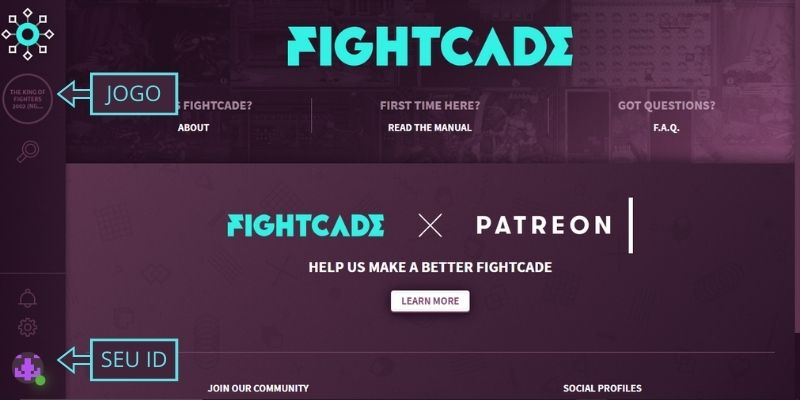

Tutorial
Como jogar online?
A melhor maneira de jogar jogos retro online é com o FIGHTCADE, um aplicativo de matchmaking para jogar jogos retrô online, que vem com diferentes emuladores para um jogo online perfeito. Gratuito e sem anúncios!
Fightcade vem com uma implementação personalizada de GGPO e outras melhorias de emulador, tornando-o a melhor plataforma para netplay P2P baseado em rollback. Isto significa que jogos exigentes em termos de atraso de entrada e capacidade de resposta podem ser jogados na Internet com muito pouco atraso perceptível.
Instalando o FIGHTCADE
A instalação do FIGHTCADE é muito simples! Vou recomendar o vídeo do canal do MVEGETA, no qual ele ensina desde a instalação do programa até as ultimas configurações para que o FIGHTCADE rode liso em sua maquina.
Vídeo do canal MVEGETA
O que fazer depois?
Após a instalação e configuração do programa será necessario criar um usuario com email e senha. Fique tranquilo, pois é muito rápido e pratico.
A seguir você irá se deparar com a tela abaixo. No canto esquerdo da tela vai estar a sala de jogos onde você vai poder desafiar seus openentes. Na parte inferior no canto esquerdo vai estar o seu status (online/offline), barra de configurações e notificações
Quando você acessar a sala do jogo vai se depará com a tela baixo. Aqui é o local onde vai ver os jogadores disponiveis para enfretar no canto direito da tela seguidos por uma bandeira que representa o seu Pais. Na frente do nome do usuraio tem o seu RANK, sendo o RANK A os melhores jogadores. Na parte inferior tem a barra de chat para enviar mensagens que serão vizualidas por todos. Na parte superior direita tem o botão teste game que serve para jogar contra a maquina e o botão para praticar
Para enfrentar um oponente basta clicar com o botão direito do mouse sobre ele e escolher a opção challenge e selecionar o número de partidas FT.O FT significa número de vitoria de um dos oponentes,exemplo: Se você escolher FT3, quer dizer que o primeiro oponente a vencer 3 partidas é o vencedor, ou seja, em um FT3 podem ter um total de 5 partidas que seria um 3 x 2.